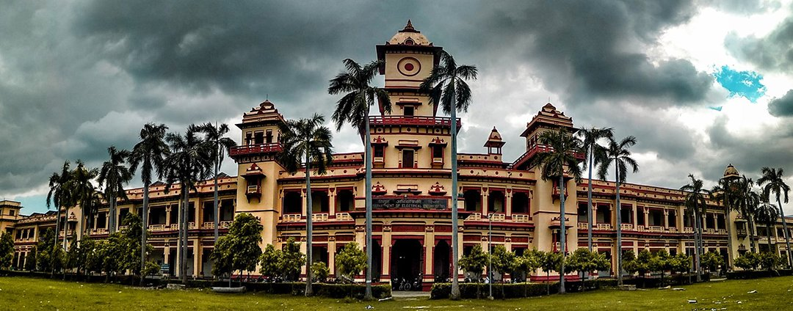

Varanasi Tourist places
Home
About
Gallery
Contact
Ganga River
Address: Varanasi, UP

B.H.U(IIT) and Temple
Address: Varanasi, UP
VARANASI TEMPLE
Address: Varanasi, UP
Dhamek Stupa
Address: Dharmapala Rd, Singhpur, Sarnath, Varanasi, UP
Assi Ghat varanasi
Address: near Lalita Ghat, Ghats of Varanasi, Lahori Tola, Varanasi, UP
Ramnagar Fort
Address: Ram Nagar Fort Palace, Qila Road, Ram Nagar Crossing, Varanasi, UP.
Durga Temple
Address: Durga Mandir, Adjacent to Durga Kund, Sankat Mochan Rd, Jawahar Nagar Colony, Varanasi, UP
Shri Kashi Vishwanath Temple
Address: Kashi Vishwanath Temple, Varanasi, UP
New Vishwanath Temple
Address: Banaras Hindu University Campus, Varanasi, UP
Darbhanga Ghat
Address: Near Ahilyabai Ghat, UP
Tulsi Manas Temple
Address: Near Durga Kund, Sankat Mochan Rd, Naria, Varanasi, UP
Alamgir Masjid
Address: Panchganga Ghat, Ghasi Tola, Varanasi, UP
Kaal Bhairav
Address:Kal Bhairav Mandir, Vishweshwar Ganj, , Varanasi, UP
Vishalakshi Temple
Address: Vishalakshi Gauri Temple, Kashi Lahori Tola, Mir Ghat, Varanasi, U.P.
Bharat Mata Temple
Address: Bharat Mata Mandir, Kashi Vidyapeeth, Chetganj, Varanasi, UP.
Sankat Mochan temple
Address: Sankat Mochan Temple, Saket Nagar, Nagwa Lanka, Varanasi, U.P
Annapurna Temple
Address: Annapurna Temple, Vishwanath Gali, Godowlia, Varanasi, U.P
Shitala Mata Temple
Address: Shitala Mata Temple, Shitala Ghat, Near Bundi Parkota Ghat, Maidagin, Ghasi Tola, Varanasi, UP
Chet Singh Ghat
Address: Chet Singh Ghat, in front of Chet Singh Fort, Shivala, Varanasi, UP
Facebook
YouTube
Email
Twitter
Instagram
Telegram
Blog
Whatsapp
We also contact.us
W.W.W.Varanasi@gmail.com
 Varanasi Tourist places
Varanasi Tourist places
Varanasi Tourist places
Varanasi Tourist places


 Facebook
Facebook YouTube
YouTube Email
Email Twitter
Twitter Instagram
Instagram Blog
Blog